珠宝首饰从业者为你揭露行业内幕
辰妈666
楼
大家好，我是辰妈，玩美柚和柚宝宝也有一段时间了，从事珠宝首饰行业多年，经常看到大家晒出自己心爱的首饰，很多人买的都很贵，尤其是旅游被坑，下面我作为一个珠宝行业内人给大家讲解一下，咱们如何省钱购买我们的珠宝和一些基本的珠宝知识，大家有不明白的可以关注我然后单独私信问我，可能有的朋友发现柚宝宝没有私信，下个美柚就ok了，美柚子功能更多一点，下面我们说一下
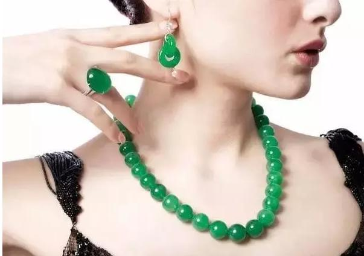
现在随着互联网的迅猛发展，信息化透明度已经很高了，大家的选择性也更大了，一般分为实体和网络，实体人家运营成本要高肯定卖的贵一点很正常，大家可以利用好互联网找个好的卖家，多学习多看少买，确实是可以省下很多钱的，如果对比商场品牌起码可以省下一倍以上的价格，咱们做个对比，拿一个大家都比较好理解的钻石来说，
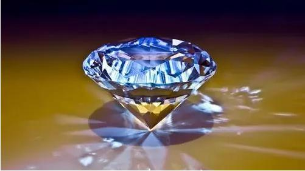
比如这一颗 GIA证书 D色30分 VVS1 3EX Storng Blue价格4000多就够了，如果你去品牌的起码要1万以上，其实东西都是一样的，所以建议大家选择私人定制，赚钱不容易，能省则省，东西都是一样的
还有玉器，玉本无价，看多少是多少，玉没有一个衡量标准，基本内行人才能大概看出基本价格，当然每个人
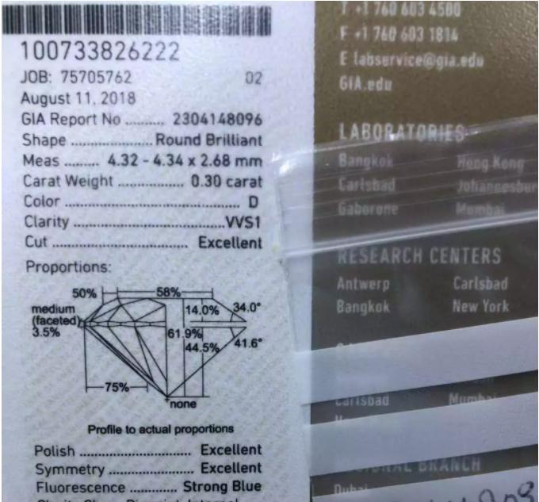 看的也不同，但是差距不会太大，还是一样，也是建议大家网络选购，给大家定制的美不美嘿嘿，如果在外面就贵很多了起码好几万，网上就不用，几千块搞定了...... 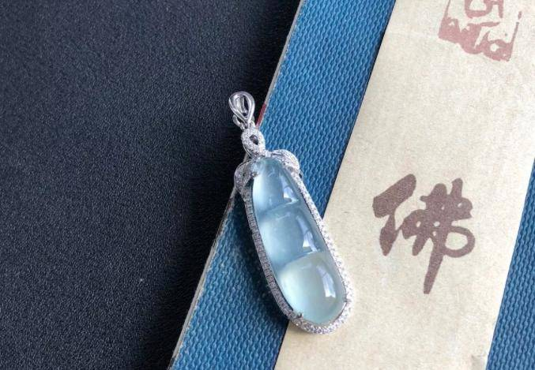
一:钻石的颜色,顶级色是D色依次类推,大家自己看即可 二:钻石的净度:最好的FL依次类推
二:钻石的净度:最好的FL依次类推

 三:钻石的荧光:顾名思义,就是指的钻石在紫外光的激发下发出的光。有一部分钻石会发荧光,一般是蓝白色的荧光,也有少部分的钻石发黄色的荧光。最好的是无荧光的,我看很多人买钻石并不在乎这个参数,其实这个也是一个重要的参数,荧光会影响火彩,不过日常佩戴不追求那么极致可以忽略,毕竟各个参数都极品那价格也就极品了,大部分都是为日常佩戴而已,肉眼也基本分辨不出来
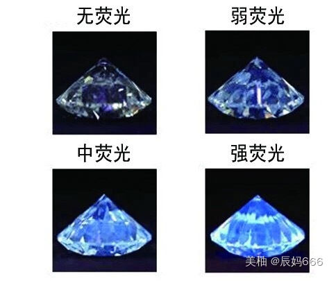
四:钻石的3EX:很多人买钻石就说我要什么什么色,3EX级别,3EX到底是什么?很多并不知道,下面我们就说明一下(GIA国际证书上的三个参数)
三:钻石的荧光:顾名思义,就是指的钻石在紫外光的激发下发出的光。有一部分钻石会发荧光,一般是蓝白色的荧光,也有少部分的钻石发黄色的荧光。最好的是无荧光的,我看很多人买钻石并不在乎这个参数,其实这个也是一个重要的参数,荧光会影响火彩,不过日常佩戴不追求那么极致可以忽略,毕竟各个参数都极品那价格也就极品了,大部分都是为日常佩戴而已,肉眼也基本分辨不出来
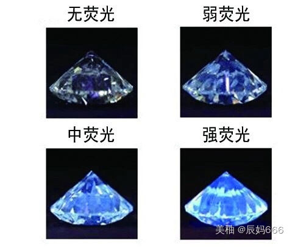
四:钻石的3EX:很多人买钻石就说我要什么什么色,3EX级别,3EX到底是什么?很多并不知道,下面我们就说明一下(GIA国际证书上的三个参数)
3EX就是钻石的切磨CUT是EXCELLENT(优秀的),POLISH(抛光度)也是EXCELLENT,SYMMETRY(对称性)也是EXCELLENT,这三者的结合就是3EX,当然3EX的综合应该就是完美的切工,它所显现的钻石火彩是最好的。 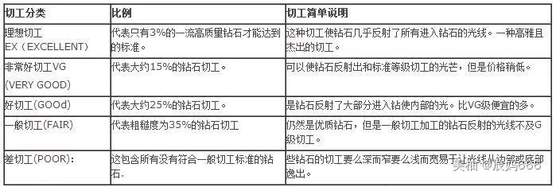 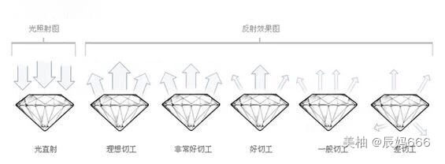 和大家强调一下一定要GIA证书,国际报价表是以gia为标准的,很多证书你即使到了E, GIA掉级坑你到K我不夸张,某些机构我就不点名了,有人觉得我的级别那么高还那么便宜好实惠,其实不是那么回事!!!!!!!!! 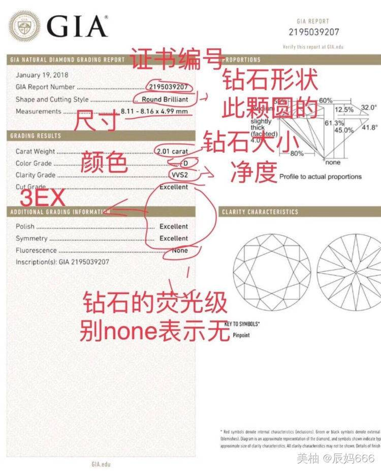 看完这张图是不是GIA证书也会看了,带这样的证书一般钻石要贵一点,比如一张一克拉的钻石GIA证书要1000多人民币,越大的越贵,看懂了钻石钻石和GIA证书我们就可以自己去对比价格挑选性价比最高的钻石了
五:钻石无奶咖绿
奶钻 咖钻 这个两个参数GIA证书也没有,但是对于价格影响也是比较大的
奶油钻:从字面理解就和奶油一样油腻,钻石里面不同颜色的云状物,常见的是白色,会让钻石💎有一层朦胧感,对火彩影响很大,或者说看不到火彩,这样的钻石是没法用的,但是它对出证书没有影响,它照样可以出高级别的颜色,大家一定要注意,很多不良商家会利用这个,我们是级别高的钻石还便宜,这个也是一个陷阱,给大家一些图例做参考: 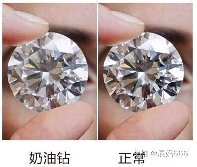 咖钻:也叫咖啡钻,咖啡色,也就是褐色或者棕色出现在我们白色钻石种(我们只说白钻)白钻肯定越白越好,这种色咖色严重影响价值,而且证书不写
一般在K,L级别钻石出现比较多,给大家找几个图例子 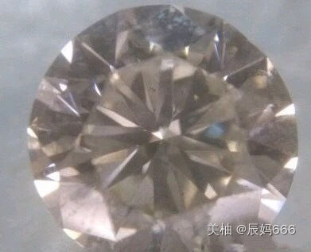 我们大家买的都是白钻肯定是越白越好,如果同一个级别一个更白一个有点绿你们说哪个好呢?很好理解 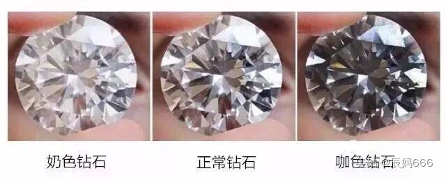 钻石大小对比图,大家看看自己适合多大 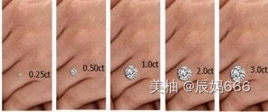 还有一个环节,镶嵌价格一般的18k金价格240左右,每天价格不一样有浮动这个不固定,你一个戒指也就2-3克金子钱也就600-700,手工费也就200左右一般(手工费也和师傅有关系,只是说一般价格)不放任何碎钻的情况下,一颗主石的镶嵌翡也就不过千大几百搞定了,现在大家应该会对比了
（原创）那今天我们就唠唠，在做翡翠实践中对翡翠的认知和理解，那就说一下自己浅薄的理解吧，觉得不对的可以大家一起讨论，此可能会一直更新，有空就会发一发 懂得了这些基本的知识，知道分辨好坏你才能去知道价格对比，让别人评估价格不如自己多学点，然后自己去淘自己认为性价比最高的价格。
有人问翡翠是玉吗？玉是一个大的概念，翡翠呢是玉的一种，一般玉分为两大类：一是硬玉一个是软玉，翡翠硬度最高属于硬玉，和田玉属于软玉 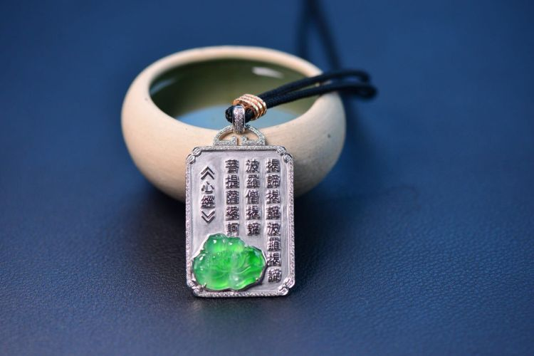 什么是翡翠的老坑，新坑 老坑就是以前发现翡翠的矿，后发现的矿叫新坑
老坑的翡翠就是老种吗？新坑的翡翠就是种不老吗？
市场上都在打出什么老坑翡翠，其实很多打出老坑翡翠都是忽悠人的概念，老坑也有豆种，也有狗屎地 新坑也有玻璃种
新坑比老坑发现的更晚，我还说那样在地底下时间更久转化时间更久，更好对吧哈哈
新坑也有老种也有新种，种老和老坑新坑没有直接关系！！ 什么翡翠的种 ？什么是翡的水？ 翡翠种是指的翡翠晶体颗粒的致密和细腻程度
翡翠的水指的是翡翠的透明度
一般说没有种水，就是说地干，水短，简单说就是：地粗水干
什么样的种是新种？什么样的种是老种？
我想现在没有人去划分，我觉得是一个相对概念
你说糯种新，那他比豆种老不老呢，同样都是糯种也有更老的冰糯种，没有最老只有更老，是一个相对概念
如果你非要个定义去划分，从以为往的经验那就从糯划分吧，糯以下种新一点，冰糯以上有一定透明度了，就属于种老一些了 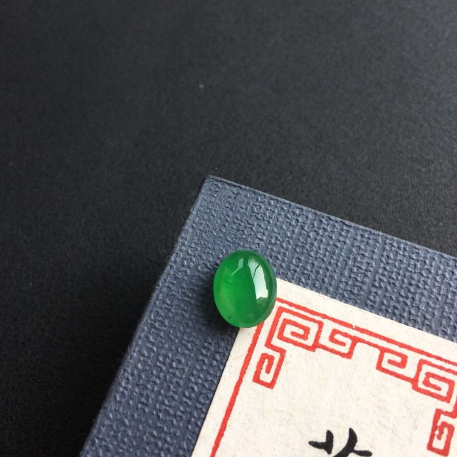 你要问什么是真正的老种呢 那就以冰种做个界线吧，冰种以上玻璃种，你就可以说是老种了（你要问我理论的种怎么区分看我以前帖子即可） 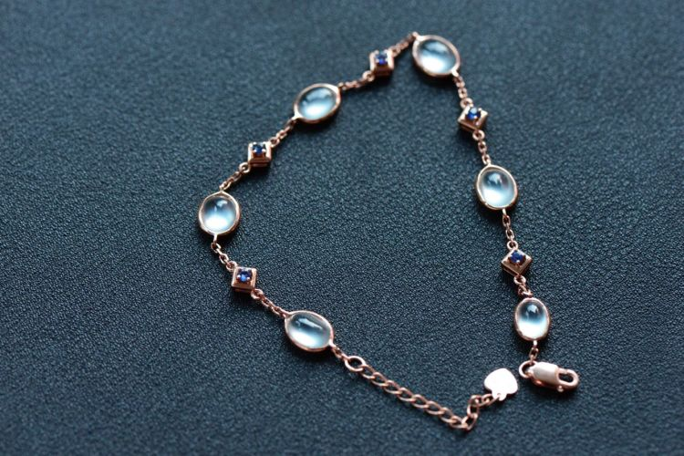 在做材料的人眼里，没有说的那些理论上的种，一个豆种能给你分出10来种，那都是把抽象的东西形象的给大家比如出来，方便大家去理解理论，在内行眼里什么样的料子 什么样的价格都是经验没有那么理论，但是你让他们表达是表达不出来的，只有看到东西才知道
我来看图例：对比一下哪个好哪个坏，大家学会了对比好坏这样自己就可以寻找性价比最高的翡翠了[大笑] 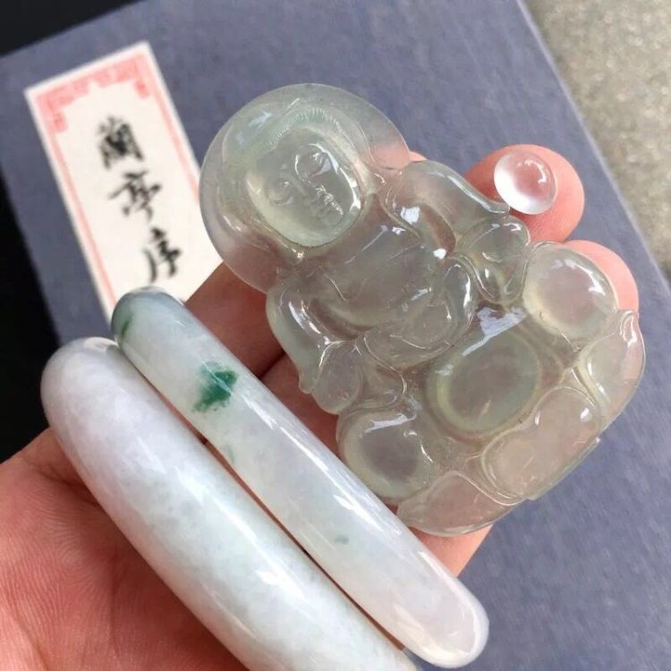 最左边第一只手镯的可以看出地粗，有明显的晶体颗粒，肉眼很清楚，
第二只飘花手镯底子就细腻了很多，还有一定的透明度
第三个是观音比第二只手镯又好一点，地更细腻，透明度更高，还有荧光
第四个蛋面是这里面最好的就达到了冰种，而且料子足够白，荧光也没有更强，你可以对比蛋面给你感觉更硬朗的感觉，这个我们就是说 的“钢性” 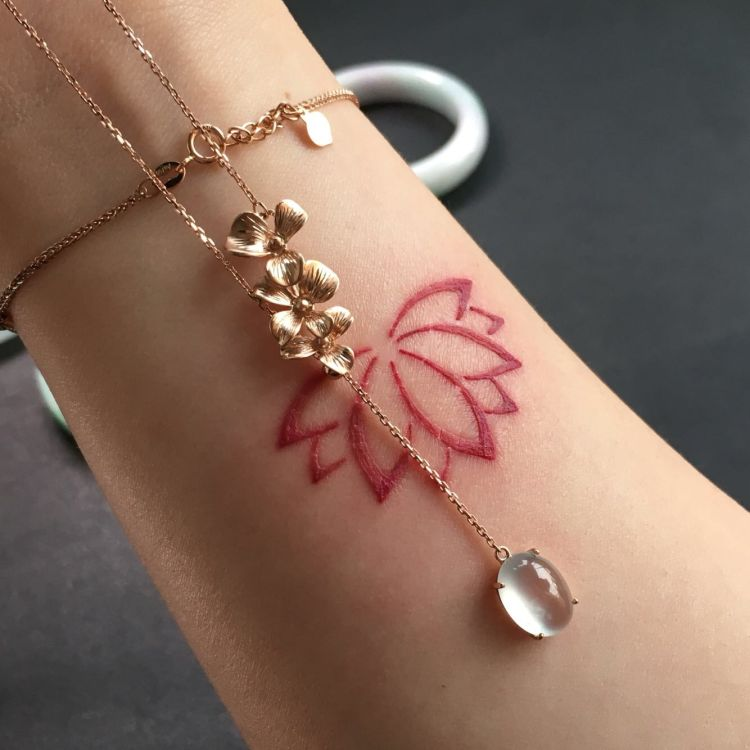 什么是翡翠的荧光？
荧光，一般经常买翡翠的都应该知道，说白了就是翡翠光线从一侧进去从另一侧反射出来，出来的光圈，一般种老一点的翡翠才会有，起码要到冰糯级别有一定的透明度，如图标出来的就是荧光
翡翠的荧光和造型也有关系，一般球状的更容易起荧光，比如蛋面图例如下： 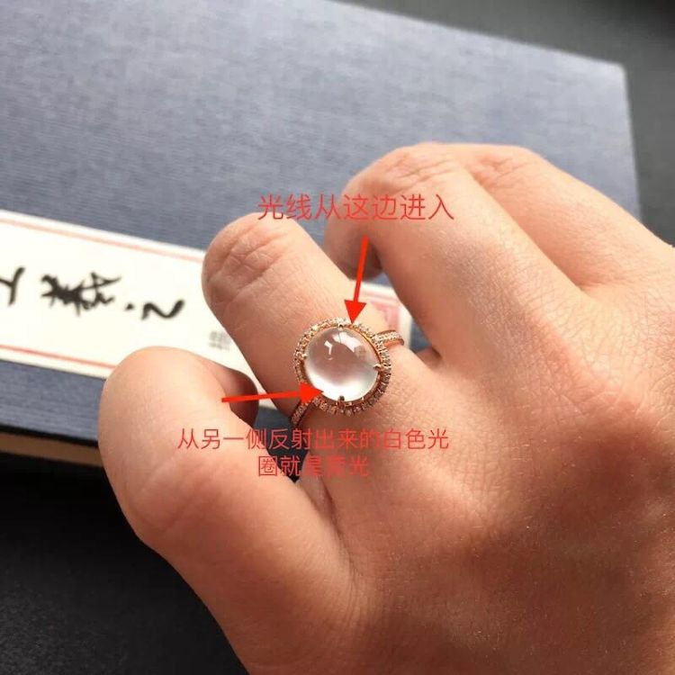 看看这个挂坠[邪恶]你们知道荧光在哪里吗？可以标注✅出来 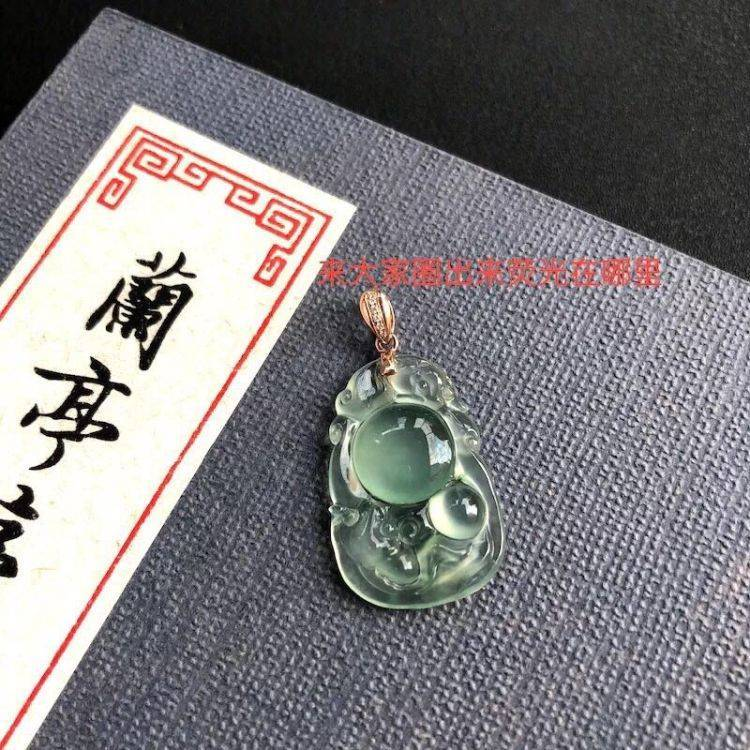
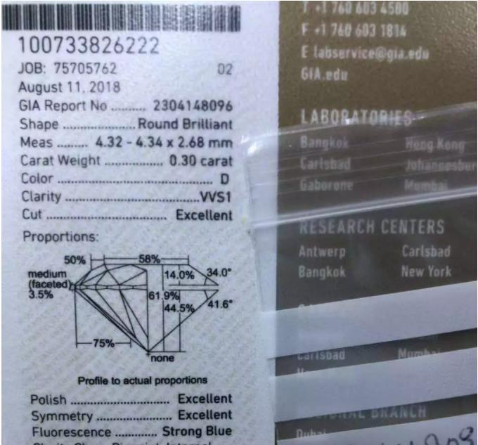 看的也不同，但是差距不会太大，还是一样，也是建议大家网络选购，给大家定制的美不美嘿嘿，如果在外面就贵很多了起码好几万，网上就不用，几千块搞定了...... 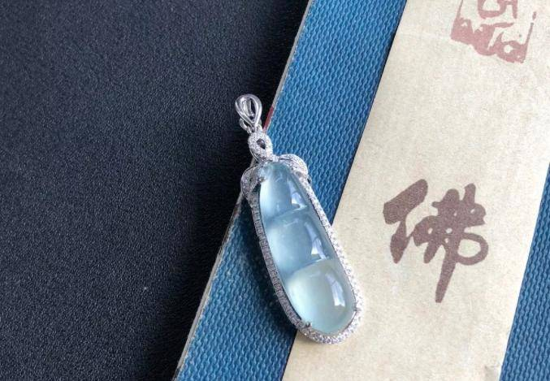
下面给大家讲解一下珠宝知识，让大家有个了解，今天就讲玉和钻石方面的，属于原创哦
🤪最近经常大家问我的钻石有没有买贵,某某品牌的,这个品牌的钻石这个价格贵不贵等提问帖子,今天我就发表一下我的个人观点,还有一些钻石的大概价格还有具体镶嵌成本给大家一些参考,自己去测算一下,个人意见仅供参考 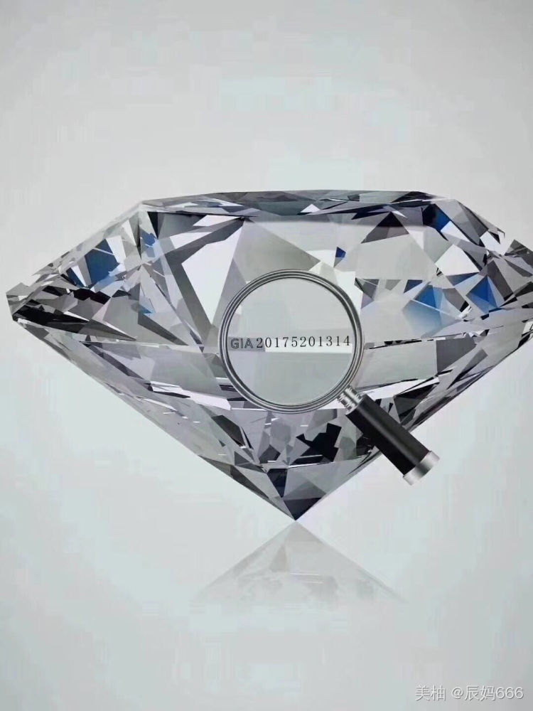 下面我们先分享一下钻石的一些基本小知识,其实钻石比玉要简单很多,直接看gia鉴定证书就可以看价格了,不用具体经验,什么级别什么价格自己去对比就好了,钻石都是一样的,下面我们介绍一下几个钻石参数一:钻石的颜色,顶级色是D色依次类推,大家自己看即可
二:钻石的净度:最好的FL依次类推
三:钻石的荧光:顾名思义,就是指的钻石在紫外光的激发下发出的光。有一部分钻石会发荧光,一般是蓝白色的荧光,也有少部分的钻石发黄色的荧光。最好的是无荧光的,我看很多人买钻石并不在乎这个参数,其实这个也是一个重要的参数,荧光会影响火彩,不过日常佩戴不追求那么极致可以忽略,毕竟各个参数都极品那价格也就极品了,大部分都是为日常佩戴而已,肉眼也基本分辨不出来
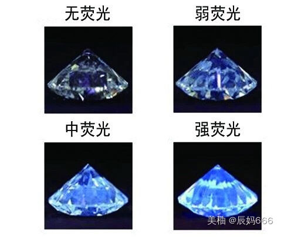
四:钻石的3EX:很多人买钻石就说我要什么什么色,3EX级别,3EX到底是什么?很多并不知道,下面我们就说明一下(GIA国际证书上的三个参数)
3EX就是钻石的切磨CUT是EXCELLENT(优秀的),POLISH(抛光度)也是EXCELLENT,SYMMETRY(对称性)也是EXCELLENT,这三者的结合就是3EX,当然3EX的综合应该就是完美的切工,它所显现的钻石火彩是最好的。 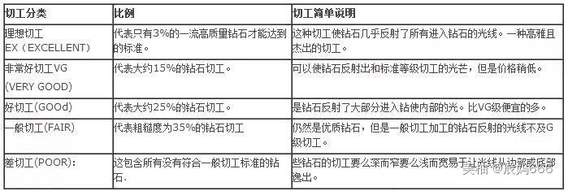 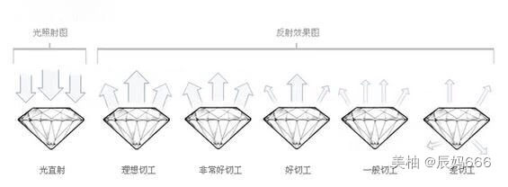 和大家强调一下一定要GIA证书,国际报价表是以gia为标准的,很多证书你即使到了E, GIA掉级坑你到K我不夸张,某些机构我就不点名了,有人觉得我的级别那么高还那么便宜好实惠,其实不是那么回事!!!!!!!!! 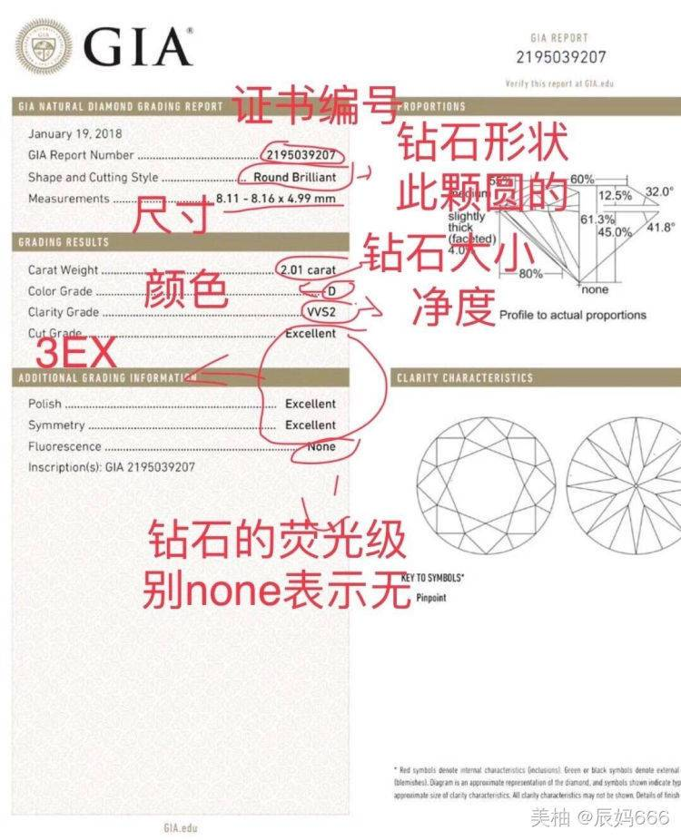 看完这张图是不是GIA证书也会看了,带这样的证书一般钻石要贵一点,比如一张一克拉的钻石GIA证书要1000多人民币,越大的越贵,看懂了钻石钻石和GIA证书我们就可以自己去对比价格挑选性价比最高的钻石了
五:钻石无奶咖绿
奶钻 咖钻 这个两个参数GIA证书也没有,但是对于价格影响也是比较大的
奶油钻:从字面理解就和奶油一样油腻,钻石里面不同颜色的云状物,常见的是白色,会让钻石💎有一层朦胧感,对火彩影响很大,或者说看不到火彩,这样的钻石是没法用的,但是它对出证书没有影响,它照样可以出高级别的颜色,大家一定要注意,很多不良商家会利用这个,我们是级别高的钻石还便宜,这个也是一个陷阱,给大家一些图例做参考: 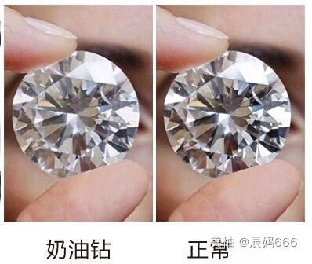 咖钻:也叫咖啡钻,咖啡色,也就是褐色或者棕色出现在我们白色钻石种(我们只说白钻)白钻肯定越白越好,这种色咖色严重影响价值,而且证书不写
一般在K,L级别钻石出现比较多,给大家找几个图例子 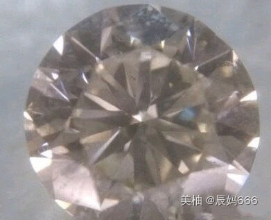 我们大家买的都是白钻肯定是越白越好,如果同一个级别一个更白一个有点绿你们说哪个好呢?很好理解 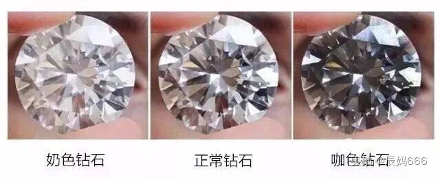 钻石大小对比图,大家看看自己适合多大 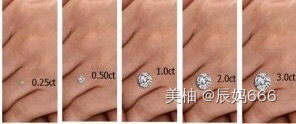 还有一个环节,镶嵌价格一般的18k金价格240左右,每天价格不一样有浮动这个不固定,你一个戒指也就2-3克金子钱也就600-700,手工费也就200左右一般(手工费也和师傅有关系,只是说一般价格)不放任何碎钻的情况下,一颗主石的镶嵌翡也就不过千大几百搞定了,现在大家应该会对比了
下面我们讲玉知识，也是原创哦
（原创）那今天我们就唠唠，在做翡翠实践中对翡翠的认知和理解，那就说一下自己浅薄的理解吧，觉得不对的可以大家一起讨论，此可能会一直更新，有空就会发一发 懂得了这些基本的知识，知道分辨好坏你才能去知道价格对比，让别人评估价格不如自己多学点，然后自己去淘自己认为性价比最高的价格。
有人问翡翠是玉吗？玉是一个大的概念，翡翠呢是玉的一种，一般玉分为两大类：一是硬玉一个是软玉，翡翠硬度最高属于硬玉，和田玉属于软玉 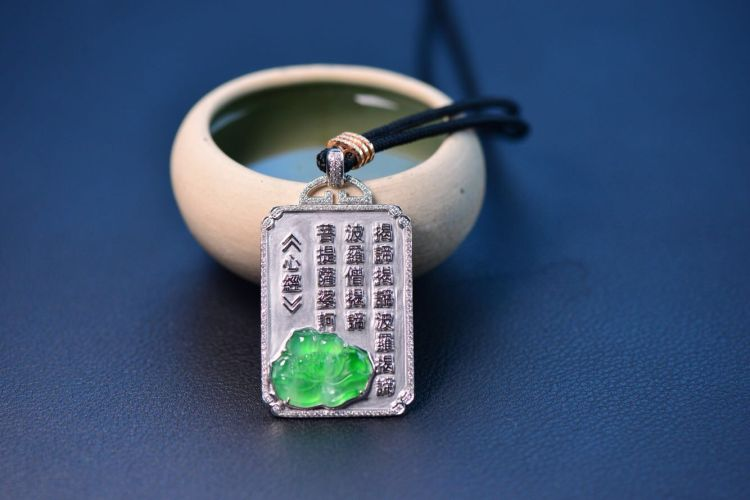 什么是翡翠的老坑，新坑 老坑就是以前发现翡翠的矿，后发现的矿叫新坑
老坑的翡翠就是老种吗？新坑的翡翠就是种不老吗？
市场上都在打出什么老坑翡翠，其实很多打出老坑翡翠都是忽悠人的概念，老坑也有豆种，也有狗屎地 新坑也有玻璃种
新坑比老坑发现的更晚，我还说那样在地底下时间更久转化时间更久，更好对吧哈哈
新坑也有老种也有新种，种老和老坑新坑没有直接关系！！ 什么翡翠的种 ？什么是翡的水？ 翡翠种是指的翡翠晶体颗粒的致密和细腻程度
翡翠的水指的是翡翠的透明度
一般说没有种水，就是说地干，水短，简单说就是：地粗水干
什么样的种是新种？什么样的种是老种？
我想现在没有人去划分，我觉得是一个相对概念
你说糯种新，那他比豆种老不老呢，同样都是糯种也有更老的冰糯种，没有最老只有更老，是一个相对概念
如果你非要个定义去划分，从以为往的经验那就从糯划分吧，糯以下种新一点，冰糯以上有一定透明度了，就属于种老一些了 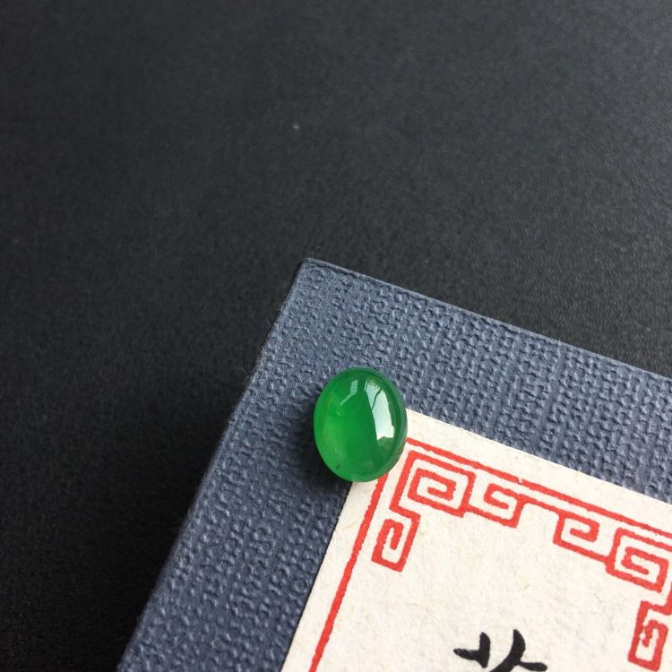 你要问什么是真正的老种呢 那就以冰种做个界线吧，冰种以上玻璃种，你就可以说是老种了（你要问我理论的种怎么区分看我以前帖子即可） 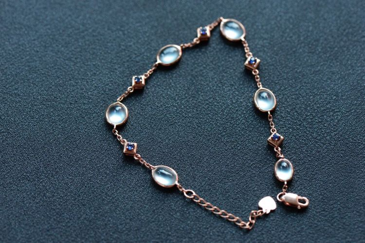 在做材料的人眼里，没有说的那些理论上的种，一个豆种能给你分出10来种，那都是把抽象的东西形象的给大家比如出来，方便大家去理解理论，在内行眼里什么样的料子 什么样的价格都是经验没有那么理论，但是你让他们表达是表达不出来的，只有看到东西才知道
我来看图例：对比一下哪个好哪个坏，大家学会了对比好坏这样自己就可以寻找性价比最高的翡翠了[大笑] 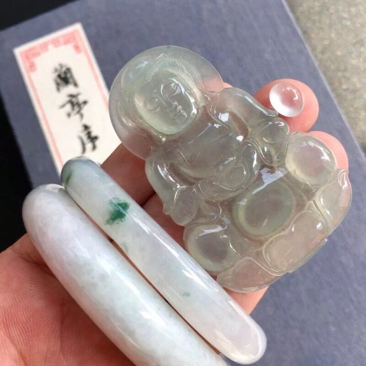 最左边第一只手镯的可以看出地粗，有明显的晶体颗粒，肉眼很清楚，
第二只飘花手镯底子就细腻了很多，还有一定的透明度
第三个是观音比第二只手镯又好一点，地更细腻，透明度更高，还有荧光
第四个蛋面是这里面最好的就达到了冰种，而且料子足够白，荧光也没有更强，你可以对比蛋面给你感觉更硬朗的感觉，这个我们就是说 的“钢性” 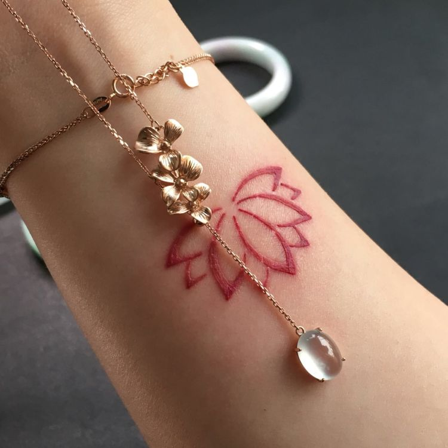 什么是翡翠的荧光？
荧光，一般经常买翡翠的都应该知道，说白了就是翡翠光线从一侧进去从另一侧反射出来，出来的光圈，一般种老一点的翡翠才会有，起码要到冰糯级别有一定的透明度，如图标出来的就是荧光
翡翠的荧光和造型也有关系，一般球状的更容易起荧光，比如蛋面图例如下： 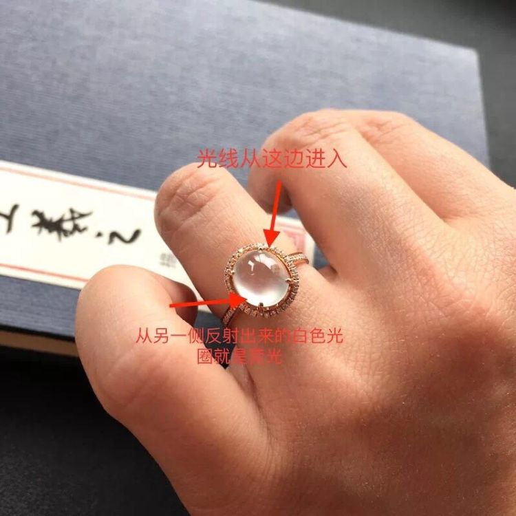 看看这个挂坠[邪恶]你们知道荧光在哪里吗？可以标注✅出来 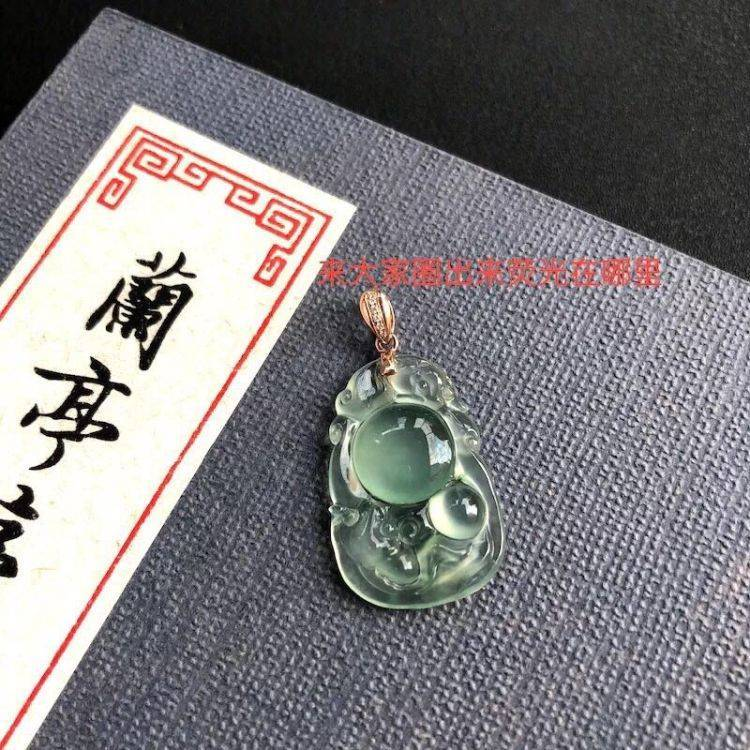
11-21
15664